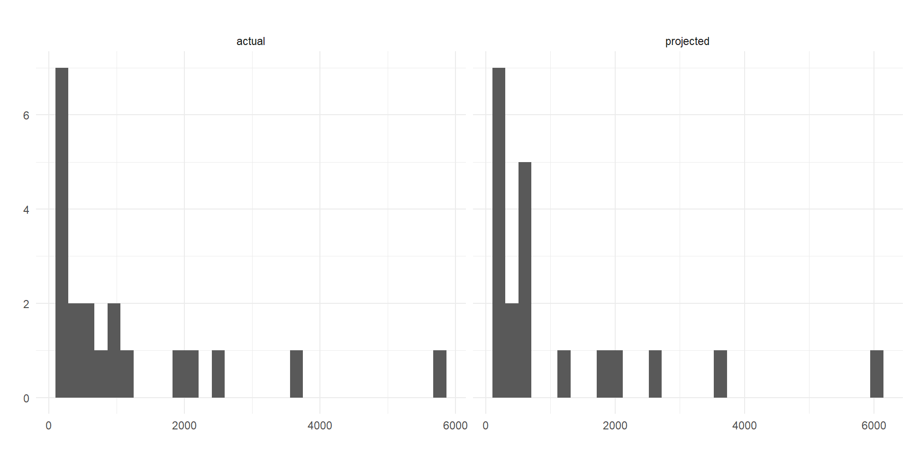
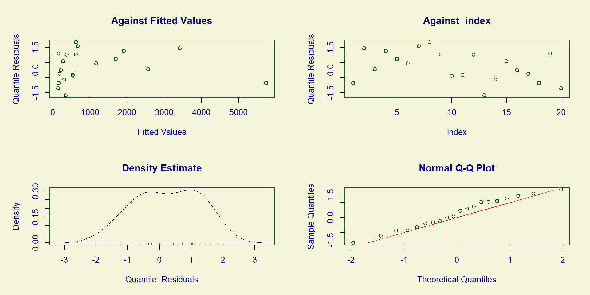

Modelos Lineares Generalizados
A distribuição Birnbaum-Saunders (Birnbaum and Saunders, 1969) é utilizada para descrever tempo de vida por fadiga (exposição cumulativa a danos, vibrações, etc) de materiais expostos à ciclos homogêneos. O processo de fadiga descrito pelos autores é:
Para este problema, os autores definem que: Seja T o tempo total até a ocorrência da falha e cumprida as condições de regularidade, podemos dizer que T segue distribuição Birnbaum-Saunders (BS), tal que \(T \sim BS(\alpha,\beta)\), e \[T = \beta\biggl(\frac{\alpha}{2}Z+\sqrt{(\frac{\alpha}{2}Z)^2+1} \biggl),\] onde \(\alpha\) é um parâmetro de forma, \(\beta\) é parâmetro de localização (mediana), e \(Z\) é uma variável aleatória com distribuição normal padrão.
Em uma aplicação, os parâmetros \(\alpha\) e \(\beta\) devem ser estimados.
Em geral, iremos trabalhar com uma reparametrização da distribuição Birnbaum-Saunders, especialmente para regressão. Rieck e Nedelman (1991) mostram a relação da distribuição Birnbaum-Saunders com a distribuição seno hiperbólico normal.
Seja \(T \sim BS(\alpha,\beta)\), então \(Y \sim SHN(\alpha,log(\beta),\sigma=2)\), onde \(\alpha\) é parâmetro de forma, \(\beta\) é parâmetro de localização, e \(\sigma\) é parâmetro de de escala fixo.
Desta forma, a distribuição seno hiperbólica normal pode também ser chamada de distribuição log-Birnbaum-Saunders (LBS).
Assumindo \(T_i\) variável resposta, podemos construir um modelo de regressão Birbaum-Saunders, tal que: \[T_i = \beta_i\varphi_i = exp(\mu_i)\varphi_i=exp(\mathbf{x}_i^T\mathbf{\eta})\varphi_i, i = 1,2,...,n.\] onde \(T_i\) e \(\beta_i = exp(\mu_i)\) são a variável resposta e a mediana para a i-ésima observação; \(\mathbf{\eta} = (\eta_0,\eta_1,...,\eta_p)^T\) é o vetor de parâmetros desconhecidos a serem estimados pela regressão, \(\mathbf{x}_i^T=(1,x_{i1},...,x_{ip})\) são os valores das \(p\) variáveis explicativas, e \(\varphi_i \sim BS(\alpha,1)\) é o erro do modelo, tal que \(T_i \sim BS(\alpha,\beta)\).
Para construir a função de verossimilhança, será necessário reparametrizar a distribuição \(T_i \sim BS(\alpha,\beta_i)\) para \(Y_i = log(T_i) \sim LBS(\alpha,log(\beta_i))\), tal que \[log(T_i) = Y_i = \mu_i + \epsilon_i = \mathbf{x}_i^T\mathbf{\eta}+\epsilon_i, i=1,...,n.\]
Desta forma, a função de verossimilhança para \(\mathbf{\theta}=(\alpha,\mathbf{\eta}^T)^T\) não terá solução analítica, sendo necessário estimar o vetor de parâmetros \(\mathbf{\eta}\) utilizando métodos iterativos de otimização não linear.
Desta estimativa obtida, podemos obter a estimativa de máxima verossimilhança do parâmetro \(\alpha\), tal que: \[\hat{\alpha} = \sqrt{\frac{4}{n}\sum_{i=1}^nsinh^2\biggl(\frac{y_i-\mathbf{x}_i^T\mathbf{\hat{\eta}}}{2}\biggl)}.\]
Podemos também utilizar o estimador de mínimos quadrados para \(\mathbf{\eta}\), da forma \[\hat{\mathbf{\eta}}=(\mathbf{X}^T\mathbf{X})^{-1}\mathbf{X}^T\mathbf{y},\] onde \(\mathbf{y}\) é o vetor de observações, e \(\mathbf{X}\) é a matriz de desenho do modelo. Entretanto, este método é menos eficiente que o estimador de máxima verossimilhança, conforme observado por Rieck e Nedelman (1991).
Santos-Neto et al. (2012) propuseram uma reparametrização da distribuição Birnbaum-Saunders, sendo: \(\alpha=\frac{2}{\delta},\beta=\frac{\delta\mu}{\delta+1},\) tal que \(\delta=\frac{2}{\alpha^2},\mu=\beta\Bigl(1+\frac{\alpha^2}{2}\Bigl)\), sendo \(\delta>0,\mu>0\) parâmetros de forma e média, respectivamente.
Nesta parametrização, a função de densidade de probabilidade fica definida por: \[f_Y(y|\mu,\delta)=\frac{exp(\frac{\delta}{2}\sqrt{\delta+1})}{\sqrt{16\pi\mu}y^{\frac{3}{2}}}\Bigl(y+\frac{\delta\mu}{\delta+1}\Bigl)exp\Biggl(-\frac{\delta}{4}\Biggl[\frac{y(\delta+1)}{\delta\mu}+\frac{\delta\mu}{y(\delta+1)}\Biggl]\Biggl)\]
Sendo \(RBS(\mu,\delta)\) a reparametrização pela média da distribuição Birnbaum-Saunders original, Leiva et al. (2014) propõe um modelo de regressão em que, seja \(Y \sim RBS(\mu,\delta)\), a média de \(Y_i\) satisfaz a relação: \[h(\mu_i)=\mathbf{x}_i^T\mathbf{\beta}, i=1,...,n,\] em que \(\mathbf{\beta}=(\beta_1,...,\beta_p)^T,p<n\) é vetor de coeficientes de regressão a serem estimados, e \(\mathbf{x}_i=(x_{i1},x_{i2},...,x_{ip})^T\) são observações de p regressores, e \(\mu_i=h^{-1}(\mathbf{x}_i^T\mathbf{\beta}),\) com \(h(.)\) sendo uma função de ligação positiva e duas vezes diferenciável.
Sob a distribuição RBS, \(\mathbb{E}(Y)=\mu\) e \(Var(Y) = \mu^2 CV(Y)^2\), onde \(CV(Y) = \frac{\sqrt{2\delta+5}}{(\delta+1)}\in (0,\sqrt{5})\) é o coeficiente de variação de Y.
A variância de \(Y_i\) é função de \(\mu_i\), logo estaremos modelando também a variância.
Vantagens
Mais uma família para obter um ajuste melhor aos dados;
Pode ser utilizada para dados censurados;
Resultados do modelo têm interpretação fácil;
Implementado no R!
Desvantagens
Distribuição pouco conhecida;
Limitações conceituais e práticas;
Definição matemática complexa;
Pouco material prático disponível de forma fácil.
Utilizarei o conjunto de dados cpd do pacote faraway, referente a projeção de vendas e o verdadeiro número de vendas de 20 produtos

Vemos que tanto a variável resposta, actual, quanto a covariável explicativa, projected, são obviamente positivas, e também assimétricas à direta.
Veremos qual distribuição o pacote gamlss recomenda para melhor ajuste aos dados
IG BCPE IGAMMA LOGNO2 LOGNO GIG GG BCCGo
319.7223 320.9136 320.9552 321.5667 321.5667 321.7220 322.8726 323.0453
BCCG EXP PARETO2 GP PARETO2o GB2 WEI WEI2
323.0453 323.5004 324.1676 324.1676 324.1676 324.8727 324.9636 324.9636
WEI3 BCTo GA exGAUS
324.9636 325.0453 325.3356 352.5137 Vemos que o pacote GAMLSS oferece diversas opções de ajuste para este conjunto de dados. Entretanto, estamos especialmente interessados em tentar ajustar os dados utilizando o modelo RBS
Primeiramente, é necessário baixar e instalar o pacote RBS, que não está disponível no CRAN, utilizando o comando
Agora, tentaremos o ajuste utilizando a distribuição RBS, e aproveitando da sintaxe e funcionalidades do pacote gamlss
Ajustando o modelo
******************************************************************
Family: c("RBS", "BirnbaumSaunders")
Call:
gamlss::gamlss(formula = actual ~ projected, family = RBS(mu.link = "identity"),
method = CG())
Fitting method: CG()
------------------------------------------------------------------
Mu link function: identity
Mu Coefficients:
Estimate Std. Error t value Pr(>|t|)
(Intercept) 2.80360 18.08128 0.155 0.879
projected 1.08047 0.07339 14.722 4.16e-11 ***
---
Signif. codes: 0 '***' 0.001 '**' 0.01 '*' 0.05 '.' 0.1 ' ' 1
------------------------------------------------------------------
Sigma link function: log
Sigma Coefficients:
Estimate Std. Error t value Pr(>|t|)
(Intercept) 3.9020 0.3162 12.34 6.56e-10 ***
---
Signif. codes: 0 '***' 0.001 '**' 0.01 '*' 0.05 '.' 0.1 ' ' 1
------------------------------------------------------------------
No. of observations in the fit: 20
Degrees of Freedom for the fit: 3
Residual Deg. of Freedom: 17
at cycle: 8
Global Deviance: 247.755
AIC: 253.755
SBC: 256.7422
******************************************************************Modelando também a variância
******************************************************************
Family: c("RBS", "BirnbaumSaunders")
Call:
gamlss::gamlss(formula = actual ~ projected, sigma.formula = ~projected,
family = RBS(mu.link = "identity"), method = CG())
Fitting method: CG()
------------------------------------------------------------------
Mu link function: identity
Mu Coefficients:
Estimate Std. Error t value Pr(>|t|)
(Intercept) 34.81320 21.00592 1.657 0.117
projected 0.95759 0.01903 50.318 <2e-16 ***
---
Signif. codes: 0 '***' 0.001 '**' 0.01 '*' 0.05 '.' 0.1 ' ' 1
------------------------------------------------------------------
Sigma link function: log
Sigma Coefficients:
Estimate Std. Error t value Pr(>|t|)
(Intercept) 3.1348243 0.4749559 6.600 6.1e-06 ***
projected 0.0010326 0.0003238 3.189 0.0057 **
---
Signif. codes: 0 '***' 0.001 '**' 0.01 '*' 0.05 '.' 0.1 ' ' 1
------------------------------------------------------------------
No. of observations in the fit: 20
Degrees of Freedom for the fit: 4
Residual Deg. of Freedom: 16
at cycle: 20
Global Deviance: 241.0335
AIC: 249.0335
SBC: 253.0165
******************************************************************Podemos realizar a rotina normal de análise de diagnósticos do modelo, utilizando as funcionalidades do pacote gamlss

******************************************************************
Summary of the Quantile Residuals
mean = 0.2395729
variance = 1.024173
coef. of skewness = -0.1452511
coef. of kurtosis = 1.76144
Filliben correlation coefficient = 0.9877058
******************************************************************Birnbaum, Z. and Saunders, S. (1969). A new family of life distributions. Journal of Applied Probability, 6:319–327.
Santos-Neto, M., Cysneiros, F., Leiva, V., and Ahmed, S. (2012). On new parameterizations of the Birnbaum-Saunders distribution. Pakistan Journal of Statistics, 28:1–26.
Santos-Neto, M., Cysneiros, F., Leiva, V., and Barros, M. (2014). On new parameterizations of the Birnbaum-Saunders distribution and its moments, estimation and application. Revstat Statistical Journal, 12:247–272.
Leiva, V., Santos-Neto, M., Cysneiros, F., and Barros, M. (2014). BirnbaumSaunders statistical modelling: a new approach. Statistical Modelling, 14:21–48.
Rieck, J. and Nedelman, J. (1991). A log-linear model for the Birnbaum-Saunders distribution. Technometrics, 3:51–60.
Notas de aula do Prof. Helton Saulo. Disciplina Tópicos em Estatística 2 — Modelagem com apoio computacional. UnB, 2º/2024.
Departamento de estatística - UnB